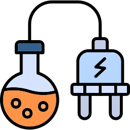
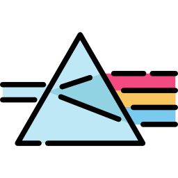
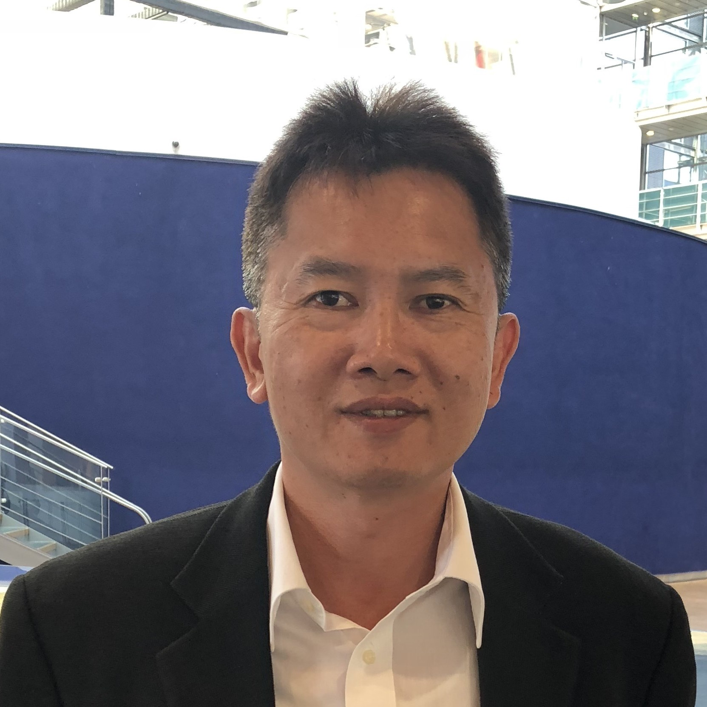

InPHRED's patented nanoporous DBR technology breaks a 30-year industry deadlock — enabling manufacturable VCSELs and RC-LEDs across wavelengths previously inaccessible at commercial scale.
Our core nanoporous technology is a natural fit for three high-growth applications.
SWIR VCSELs unlock next-generation 3D sensing for smartphones, AR/VR headsets, automotive LiDAR, and material identification — with superior eye-safety and signal-to-noise ratio versus today's NIR solutions.
The world's first non-invasive optical glucose monitor (NICGM) is enabled by SWIR wavelengths that penetrate deep into tissue. Our visible RC-LEDs also improve wearable health accuracy for heart rate, SpO₂, and novel biomarkers.
InP VCSELs are best positioned for mid-board to inter-rack reaches with high thermal reliability and simple, SMF-compatible integration. Our RC-LEDs address ultra-short-reach die-to-die connectivity.


SWIR VCSEL power and efficiency targets met. Industry-standard reliability testing passed. First-of-kind optical glucose sensor prototype demonstrated.
Short-term revenue streams with path to profitability by 2028. Long-term growth to capture the AI-related power and infrastructure opportunity.
Pilot flow demonstrated with 4+ established foundry partners. Lean fabless team of 7 FTEs with around-the-clock operations across the US and Taiwan.
